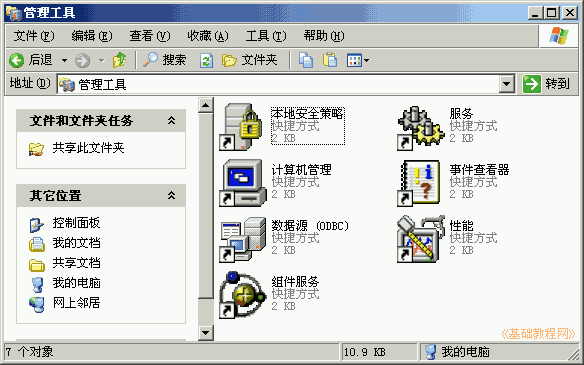
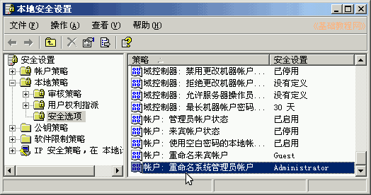
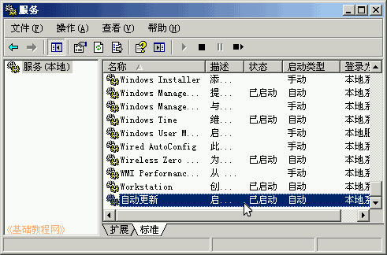
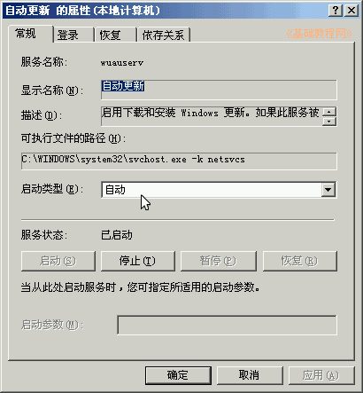
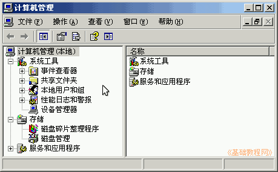

控制面板基础教程
作者：TeliuTe 来源：基础教程网
管理工具可以对系统进行全面的管理，包括磁盘分区和用户管理等，下面我们来看一个练习；
1、管理工具
1）进入经典视图，点“管理工具”图标出来一个面板；
2）里面包括对系统的安全管理，服务管理，性能等；

2、设置选项
1）本地安全策略可以限制用户的一些操作，修改默认的管理员名称，以增强系统的安全性；

2）“服务”可以设定那些程序随机自启动，修改前找个本子记一下；

3）选中一个服务，然后点右键-属性，可以停止、设定手动或禁用，不常用的设为手动；

4）“计算机管理”中包含比较多，可以查看共享，创建用户，管理磁盘，服务和网站等；

本节学习了管理工具的基础知识，如果你成功地完成了练习，请继续学习下一课内容；
本教程由86团学校TeliuTe制作|著作权所有
基础教程网：http://teliute.org/
美丽的校园……
转载和引用本站内容，请保留版权信息和本站链接。